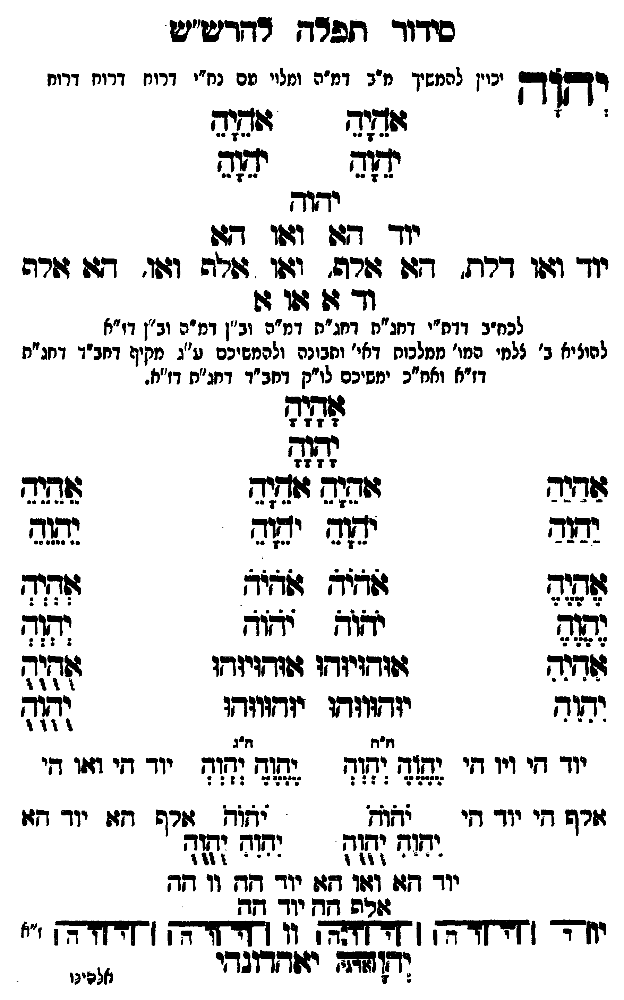

Neue Klartextfassung
יְהוָה [יכוין להמשיך מ"ב דמ"ה ומלויו עם נח"י דרוח דרוח דרוח] === טבלה === [טור ימין] אָהָיָהָ יָהָוָהָ [טור שמאל] אָהָיָהָ יָהָוָהָ === סוף טבלה === יהוה יוד הא ואו הא יוד ואו דלת, הא אלף, ואו אלף ואו, הא אלף וד א או א [לכח"ב דדת"י דחג"ת דחג"ת דמ"ה וב"ן דמ"ה וב"ן דז"א] [להעלות ב' צלמי המו' ממלכות דאי' ותבונה ולהמשיכם ע"ג מקיף דחב"ד דחג"ת דז"א וחו"ב ימשיכם לו"ק דחב"ד דחג"ת דז"א.] === טבלה === [טור ימין] אַהַיַהַ יַהַוַהַ אֶהֶיֶהֶ יֶהֶוֶהֶ אִהִיִהִ יִהִוִהִ יוד הי ויו הי אלף הי יוד הי [טור אמצעי] אָהָיָהָ יָהָוָהָ אֹהֵיָהֵ אֹהֵיָהֵ יֹהֵוָהֵ יֹהֵוָהֵ אֹהֹיֹהֹ אֹהֹיֹהֹ יֹהֹוֹהֹ יֹהֹוֹהֹ אוּהוּיוּהוּ אוּהוּיוּהוּ יוּהוּווּהוּ יוּהוּווּהוּ [ה"ח ה"ג] יֶהֶוֶהֶ יְהְוְהְ יֶהֶוֶהֶ יְהְוְהְ יֹהֹוֹהֹ יֹהֹוֹהֹ יִהִוִהִ יֻהֻוֻהֻ יִהִוִהִ יֻהֻוֻהֻ יוד הא ואו הא יוד הה וו הה אלף הה יוד הה [טור שמאל] אֵהֵיֵהֵ יֵהֵוֵהֵ אְהְיְהְ יְהְוְהְ אֻהֻיֻהֻ יֻהֻוֻהֻ יוד הי ואו הי אלף הא יוד הא === סוף טבלה === [תרשים: ארבעה צירופי יהוה בקווים אופקיים ואנכיים המחברים את האותיות. לצדי התרשים וי וי וי וי; ז"א.] יאהדונהי יהוה (אדני)
Original gegen neue OCR · Niqqud für Vergleich ausgeblendet
Original
יהוה [יכויןK037-001 להמשיך מ"ב דמ"ה ומלויו עםK037-002 נח"י דרוח דרוח דרוח] === טבלה === [טור ימין] אהיה יהוה [טור שמאל] אהיה יהוה === סוף טבלה === יהוהK037-003 יוד הא ואו הא יוד ואו דלת, הא אלף, ואו אלף ואו, הא אלף וד א או א [לכח"ב דדת"י דחג"ת דחג"תK037-004 דמ"ה וב"ן דמ"הK037-005 וב"ן דז"א] [להעלותK037-006 ב' צלמי המו' ממלכות דאי' ותבונה ולהמשיכם ע"ג מקיף דחב"ד דחג"ת דז"א וחו"בK037-007 ימשיכם לו"ק דחב"ד דחג"ת דז"א.] === טבלה === [טור ימין] אהיה יהוה אהיה יהוה אהיה יהוהK037-008 יוד הי ויו הי אלף היK037-009 יוד הי [טור אמצעי] אהיה יהוה אהיה אהיה יהוה יהוה אהיה אהיה יהוה יהוה אוהויוהו אוהויוהו יוהוווהו יוהוווהו [ה"ח ה"ג] יהוה יהוה יהוה יהוה יהוה יהוה יהוה יהוה יהוה יהוהK037-010 יוד הא ואו האK037-011 יוד ההK037-012 וו הה אלף ההK037-013 יוד הה [טור שמאל] אהיה יהוה אהיה יהוה אהיה יהוה יוד הי ואו הי אלף הא יוד הא === סוף טבלה === [תרשים: ארבעה צירופי יהוה בקווים אופקיים ואנכיים המחברים את האותיות. לצדי התרשים וי וי וי וי; ז"א.] יאהדונהי יהוה (אדני)K037-014
OCR · fehlbar
סידוד תפרח רדרש"ש 23123 יכויןK037-001 להמשיך מ"ב דמ"ה ומלוי םK037-002 נח"י דרוח דרוח דרוח תח - יגד יחודך יודך 7( וגטו דשK037-003 יוד וזזו דרח. דגג ורה' יזוזו זמה וו:ו. 4 שרה ודך ש ג:ו ו לבח"ב דדח"י דחג"ח דחג"חK037-004 דמ"ה וב"ן דמיהK037-005 וב"ן דו"א להוציאK037-006 ב' צלמי המו' ממלכות דאי' ותבונה ולהמשיכם ע"ג מקיף דחב"ד דחג"ת דז"א ואח"כK037-007 ימשיכם לו"ק דחב"ד דחג"ח דז"ח. 7 לל ל הל: ידוד יאוש ישוח צח(ש ל[ל) ללץז ל3 לש 2 (פ[- יא(א ידזד וזג זזדזנח ז(זדץזיזדץו זוודגיזדו (זחגד יקוש יודשווזוץו יזד(וודו 71 יי יי יי יי גד זז :זףזח יי יי ייי ר וזרש חיK037-008 יוד די : לאל 702 עורפ דו:K037-009 יוד דוי יז( ישוך יזוח נהדח - - - - 9 4 4 - - - - ף 44 4K037-010 יוד דזו ו4ו7 1זזזK037-011 יוד דקשK037-012 וו חת 46 לרב [[דK037-013 יוד קת יזדדך [זזחדה (463[2צ] [[ללחזדדץ חדזזהך '' וד[זזו יזודדוגדי אלדינוK037-014